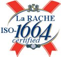

{{HEADER}}
- Pouvez-vous résumer La RACHE en une phrase
?
De manière générale la méthode RACHE consiste à prendre des
initiatives ne se limitant pas à concevoir des solutions,
mais également à faire des trucs insolites, totalement
curieux, franchement loupés ou carrément prise de tête. En
d'autres termes, La RACHE est une approche basée sur les
bonnes pratiques pour la fourniture de services
informatiques de qualité s’appuyant sur des processus
complexes que tout le monde préfère ignorer.
- La RACHE est-elle une méthode normalisée
?
Oui, tout à fait ! La RACHE est certifiée par
l'Organisation internationale de normalisation conforme à
l'ISO-1664

- Les éléments de cahier des charges me parviennent
au compte goutte sous forme de faxes griffonnés en
japonais… Que puis-je faire ?
Ce problème est bien connu : c'est la version techniquement
élaborée du post-it. Après une longue expérimentation, nous
pouvons l'affirmer, la solution est simple, utilisez La
RACHE.
- J'ai l'habitude d'utiliser le terme « en
théorie » pour décrire les fonctionnalités. Est-ce
grave ?
Non, dites que vous utilisez La RACHE.
- Les membres de l’équipe-projet éclatent de rire
quand ils passent devant le planning épinglé au panneau
d'affichage. Que dois-je faire ?
Rien, utilisez La RACHE : ils riront toujours devant
le planning, mais vous saurez pourquoi.
- Peut-on déployer un prototype en production
?
Pas de problème, c'est conforme à La RACHE.
- Puis-je développer directement en production
?
Pas de problème, c'est conforme à La RACHE.
- ITIL est-il conforme à La RACHE ?
Intrinsèquement, non. Cependant en s’appliquant à mal le
mettre en place, il devrait y avoir moyen de faire quelque
chose d'utile d'ITIL.
- Qu’est ce qu’un système en fonctionnement
?
Un système développé à La RACHE est en état de fonctionnement
lorsque le système, instable, est proche de tomber
en panne. Il est alors urgent de ne pas intervenir tant
qu'on ne sait pas encore par où il va s'effondrer.
- Qu’est ce qu’un système en panne ?
Un système en panne est un système instable en phase de
sombrer encore un peu plus, et qu'il va falloir rafistoler
à La RACHE.
- Mais pourquoi donc le site de La RACHE n'est-il
pas [Web 2.0 compilant | CSS valide | xhtml 42 conforme |
Flash powered | XML aware | toussa enabled]
?
Parce qu'il a été développé à La RACHE, tout simplement
!
- J'ai eu peu peur de rater ma mise en place de La
RACHE, que pouvez-vous me dire ?
Plus ça rate, plus ça a de chance de réussir. En somme, un
succès n'est qu'une erreur qui a fini par réussir (même
par erreur). Ne désespérez donc pas et persévérez.
- La Rache est-elle adaptée aux grands projets, aux
grandes structures ?
Oui, il semblerait même que la métempsychose récurrente du
concept de la Rache soit intrinsèquement axiomal chez
certains grands éditeurs.
- Est-ce que la méthode couvre la sécurité des
systèmes, la cybermenace et la protection des données
privées ?
Bien évidemment, l'utilisation de La RACHE vous permettra
d'aborder tous vos audits de manière sereine.
- Quelle est la licence de La RACHE ?
Afin de faire profiter le plus grand nombre des bienfaits
de La RACHE, celle-ci est dans le domaine public !
N'hésitez donc pas à l'utiliser…
{{FOOTER}}